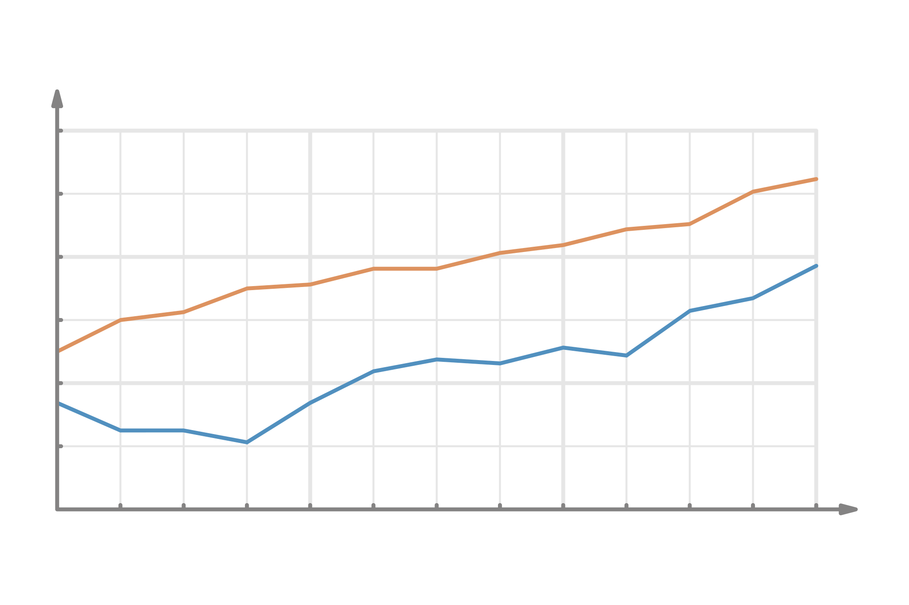

Memphis's EDGE Incentive Analysis
A data project built from five Memphis EDGE public datasets. This project includes a full ETL pipeline, exploratory and economic analysis, and a curated set of visualizations highlighting investment, job creation, and geographic patterns across Memphis.
Competitive Retail Analysis
This project analyzes Premier Protein retail listings across multiple retailers using SQL Server Developer Edition.
The goal is to practice core SQL fundamentals—aggregation, joins, filtering, and granularity.
Analyzing Order Fulfillment Options with Kroger Public API

Built a Python workflow that connects to the Kroger Public API to capture real-time fulfillment availability for a single retail item
Transformed raw JSON responses into a structured CSV datasets for analysis and reporting.Built a PowerBI dashboard(heatmap + cluster column chart) to
visualize stability trends across fulfillment options.